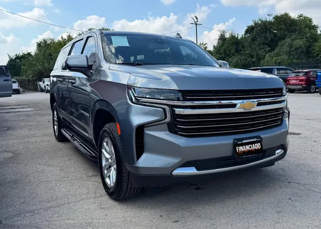

2022 Chevrolet Suburban LT
Gray • ID CCH-03

1/2General
| Year | 2022 |
| Make | Chevrolet |
| Model | Suburban LT |
| Type | SUV |
| Color | Gray |
| Mileage | 50,000 miles |
| Seats | 7 or 8 seats |
Engine & transmission
| Engine | 5.3L EcoTec3 V8 |
| Power | 355 hp |
| Torque | 383 lb-ft |
| Transmission | 10-speed automatic |
| Drivetrain | To be confirmed |
| Fuel | Gasoline |
Capacities
| Max towing | 8,000 lbs |
| Payload | 1,759 lbs |
| Fuel tank | 28 gallons |
| Fuel economy | 14/19 MPG (city/highway) |
Dimensions
| Length | 225.7 inches |
| Width | 81.1 inches |
| Height | 75.7 inches |
| Wheelbase | 134.1 inches |
Body
| Stock wheels | 18 inches |
Visible in the photos
- 3 rows
- Running boards
- Silver wheels
- Chrome grille
Great for
Big families who need plenty of room for people and luggage.
Specs for this model/trim per manufacturer and automotive media. Confirm this unit’s exact specs with the dealer.
Motor estándar (RPO L84) del trim LT según fichas de Chevrolet (355 hp / 383 lb-pie, automática de 10). Tracción no confirmada: RWD de serie, 4x4 opcional.
Versión LT 4WD según fichas de concesionario (tracción de la unidad no verificada; la 2WD es 15/20 MPG y remolca 8,300 lbs). / LT 4WD version per dealer listings (unit's drivetrain unverified; 2WD is 15/20 MPG and tows 8,300 lbs).